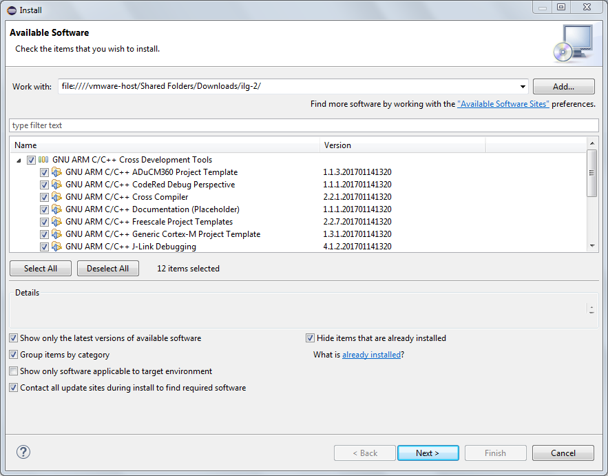
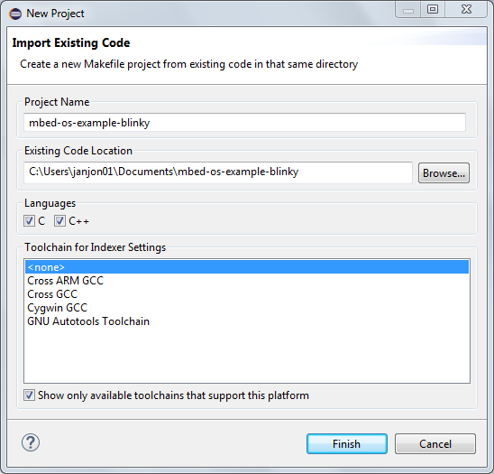
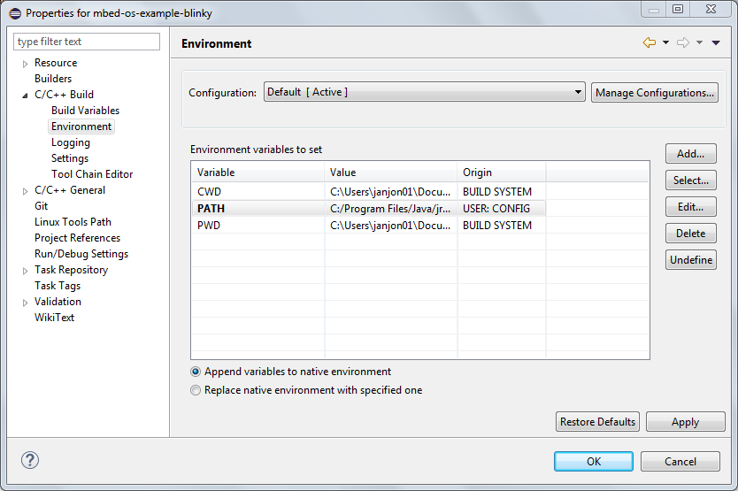
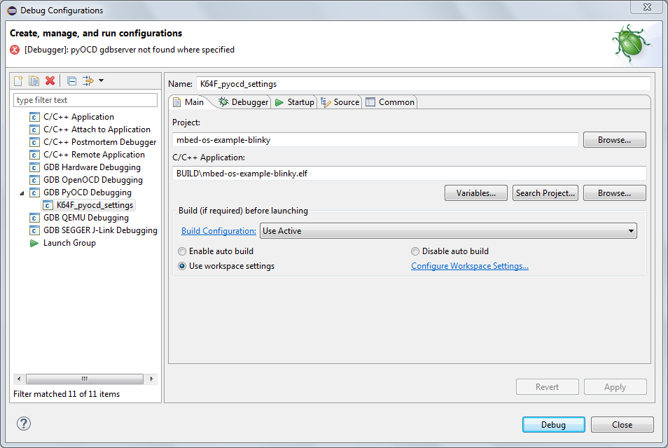
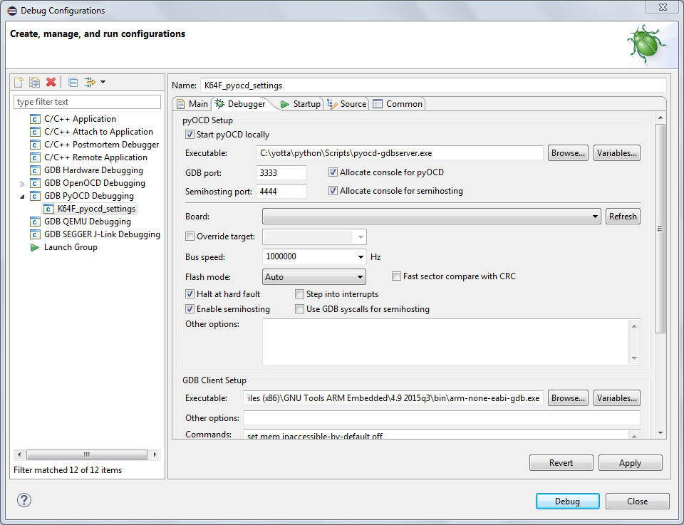
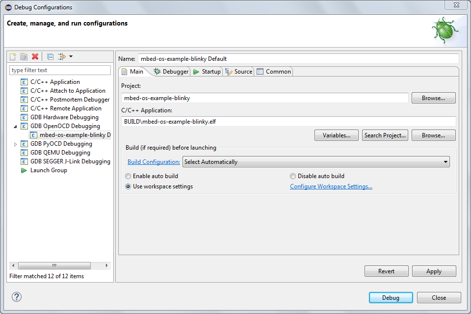
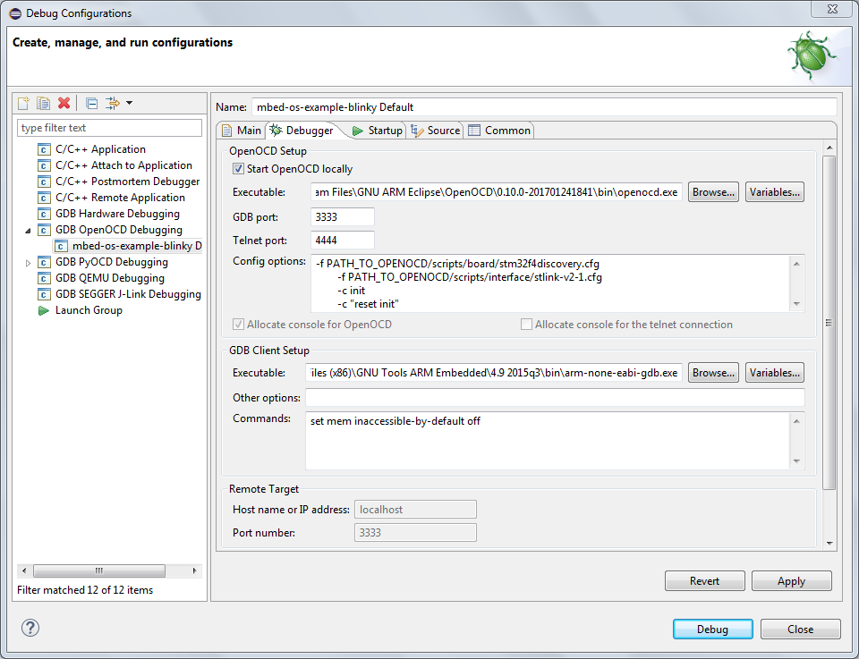
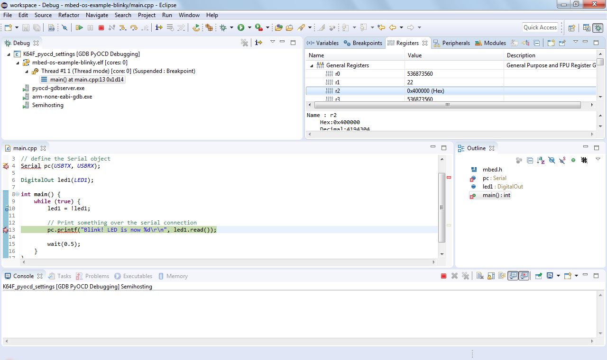

Eclipse
This document explains how to build and debug Arm Mbed OS applications using Eclipse. Before starting, please choose a compiler with which to build your project.
Installing Eclipse
You need to install Eclipse CDT with the GNU Arm Eclipse plugins to begin:
- Install Eclipse IDE for C/C++ Developers.
- Open Eclipse.
- Create a workspace directory. This will be separate from your code.
- Install the GNU Arm Eclipse plugin:
-
Click the Help menu item and select Install New Software.
-
In the Work with box, paste the install address, and press Enter:
http://gnuarmeclipse.sourceforge.net/updates.If this does not work, please see the GNU ARM Eclipse solutions and workarounds page.
-
The package GNU Arm C/C++ Cross Development Tools appears. Select it.
Selecting the cross development tools
-
Click Next repeatedly, and accept the license agreements.
-
Click Finish. If prompted to restart Eclipse, click Yes.
-
Exporting a project with Mbed CLI
To export your project to Eclipse, you can use Mbed CLI.
In your project folder, run:
## Replace K64F with your target board
## If you're not using GCC ARM, use -i eclipse_armc5 for ARMCC, or -i eclipse_iar for IAR
$ mbed export -i eclipse_gcc_arm -m K64F --profile debug
Importing the project in Eclipse
-
Open Eclipse.
-
On the Welcome screen, select Import a project with a working Makefile.
-
Select the folder to which you extracted your Mbed OS project.
-
Under Toolchain for Indexer Settings, select
<none>.Import project
-
Click Finish.
-
Dismiss the Welcome screen.
-
Select Project > Build Project to build the project.
Once the project builds, you can configure the debugger. The configuration depends on the debug server you're using: pyOCD or OpenOCD.
If the build fails with an error:
make[1]: arm-none-eabi-g++: No such file or directory, you need to configure Eclipse's PATH (not your OS PATH).Program "make" not found in PATH, install GNU-Make utility, version at least 4.0:- On Windows, you can find a compatible version of Make in Cygwin and MSYS2 distrubitions. Install the
makepackage, and add eitherC:/cygwin64/binorC:/msys64/usr/binto Eclipse's PATH. - On macOS, you can install
makeas part of Xcode command-line tools. - On Linux, the distrubition package manager provides
make.
- On Windows, you can find a compatible version of Make in Cygwin and MSYS2 distrubitions. Install the
Steps to update Eclipse's PATH:
-
In Eclipse, click Project > Properties > C/C++ Build > Environment.
-
Click Add.
-
Under Name, enter
PATH. -
Under Value, add the location of the GNU ARM Embedded Toolchain. To find it:
- On Windows, from a CMD window, run
where arm-none-eabi-g++. - On macOS and Linux, from a Terminal, run
which arm-none-eabi-g++.
Setting up PATH
- On Windows, from a CMD window, run
pyOCD
-
Select Run > Debug Configurations....
-
If no configuration exists under GDB pyOCD Debugging, click on New launch configuration.
-
In the Main tab:
- Under C/C++ Application, select the
.elffile (BUILD/projectname.elf).
Main tab
- Under C/C++ Application, select the
-
In the Debugger tab:
- Under pyOCD Setup, set the Executable path to your copy of
pyocd-gdbserver. - Under GDB Server Setup, set the Executable path to your copy of
arm-none-eabi-gdb. - If you cannot see the GDB Server Setup section, the scrollbar might be hidden; switch tabs to make the scrollbar reappear.
Debugger tab
- Under pyOCD Setup, set the Executable path to your copy of
-
Click Apply.
-
Click Debug to start debugging.
OpenOCD
-
Select Run > Debug Configurations....
-
If a configuration already exists under GDB pyOCD Debugging, please remove it.
-
If no configuration exists under GDB OpenOCD Debugging, click on New launch configuration.
-
In the Main tab:
- Select the
.elffile (BUILD/projectname.elf) under C/C++ Application.
Main tab
- Select the
-
In the Debugger tab:
- Under OpenOCD Setup, set the Executable path to your copy of
openocd. - Under OpenOCD Setup, set the Config options to the setup options from the Configure your local debug toolchain guide.
- Under GDB Client Setup, set the Executable path to your copy of
arm-none-eabi-gdb. - If you cannot see the GDB Server Setup section, the scrollbar might be hidden; switch tabs to make the scrollbar reappear.
Debugger tab
- Under OpenOCD Setup, set the Executable path to your copy of
-
Click Apply.
-
Click Debug to start debugging.
Debugging an Mbed OS application in Eclipse
Building with Mbed CLI
We build using Make, but you can also use Mbed CLI for building from Eclipse:
- Go to Project > Properties > C/C++ Build.
- Remove the check Use default build command.
- Set Build command to
mbed. - Under Behavior > Build (Incremental build), select your Mbed CLI build options. For example:
compile -m K64F -t GCC_ARM --profile debug. - Make sure to update the paths to the
.elffile in your debug configuration.